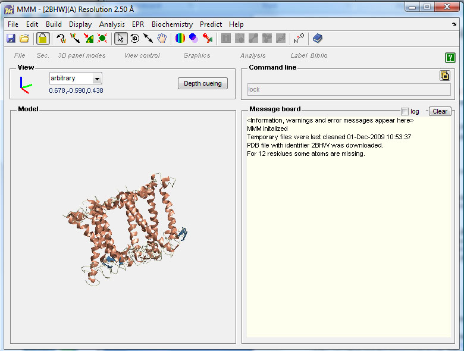
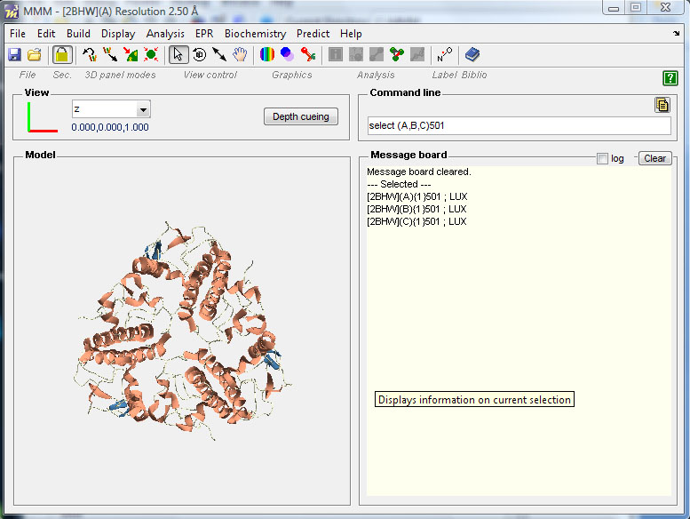

Overview • Getting started • Protocol for spin labeling and DEER simulation ↑ | ↓ • Site scan
The PDB file of the protein under investigation (in this example the major light harvesting complex LHCII, PDB code 2BHW) can be loaded with:
File/new/from PDB/local file (if the original PDB is saved in your own folder, in this case the LHCII subfolder of MMM. Beware that several protein visualization programs do not save the complete PBD information, so prefer the original PDB)
Or
File/new/from PDB/direct PDB access (providing the PDB identifier, in this case 2BHW, the original PDB is loaded from the PDB website)
The file is uploaded and visualized in the model window in ribbon representation. If you use the local file, answer the question about running the initialization script with No. The message board shows information, warnings and error messages.
In this case:
MMM initialized
Temporary files were last cleaned 01-Dec-2009 (this is the last time MMM cleaned the temp files. When the log on the message board is activated, the temp files are automatically created and stored for 30 days. After that a message will appear asking if you want to delete them.)
For 12 residues some atoms are missing (important information for the rotamers calculation)

You can save the model at any stage of your analysis, with:
File/Save as
By default a Matlab variable (.mat) file will be saved named: MMM_year-month-day_h-min-s.m, e.g. MMM_2009-12-14_09-30-43.m). However, you can choose any file name you wish. Next time you will open MMM you can load the saved model, using:
File/open/ and selecting MMM_2009-12-14_09-30-43
For easier display of the protein, in some cases it is useful to change the coordinate system of the PDB file. For example you can choose to have the z axis of the coordinate system perpendicular to the membrane plane (for membrane proteins) or parallel to a special rotation axis. In the case of 2BHW, a homo-trimer, you can change the coordinate system based on the molecular symmetry.
For that, select residues or cofactors which define the symmetry of the molecule. In this case the carotenoids LUX501 in chains A, B, C will define the C3 symmetry axis.
To select them write the command line:
The three carotenoids are selected and can be used to build the new symmetry frame by:
The protein will be redisplayed with the z axis parallel to the C3 symmetry axis. The view is set along the z axis.

The view can be easily changed by changing the axes in the
You may now continue with the Site scan.
select (A,B,C)501
Edit/Symmetry Frame
View panel.